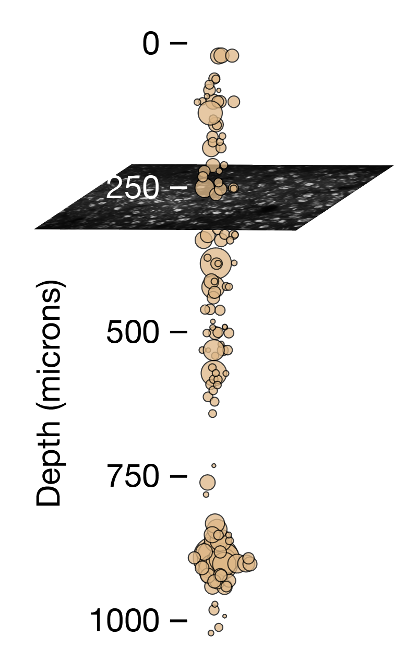

Ophys ephys comparison#
Extracellular electrophysiology (ephys) and two-photon calcium imaging (ophys) are widely used methods for measuring physiological activity with single-cell resolution across large populations of cortical neurons. While each of these two modalities has distinct advantages and disadvantages, neither provides complete, unbiased information about the underlying neural population. As a result, we need to understand how scientific conclusions may be skewed by the recording modalities to best interpret data.
There are some key differences that are readily apparent between ephys and ophys. For starters, spatial sampling is inherently different between the two modalities. Two-photon calcium imaging typically yields data in a single plane parallel to the cortical surface, and is limited to depths of <1 mm due to the rapid attenuation of light in tissue. Even with multiplane imaging, these planes are almost always parallel to the surface of the cortex. Extracellular electrophysiology, on the other hand, utilizes microelectrodes embedded in the tissue, and thus dense recordings are easiest to perform along a straight line, normal to the cortical surface, in order to minimize per-channel tissue displacement. Linear probes provide simultaneous access to neurons in both cortex and subcortical structures, but make it difficult to sample many neurons from the same cortical layer.

The temporal resolutions of these two methodologies also differ in critical ways. Imaging is limited by the dwell time required to capture enough photons to distinguish physiological changes in fluorescence from noise, and the kinetics of calcium- dependent indicators additionally constrain the ability to temporally localize neural activity. While kilohertz-scale imaging has been achieved, most studies are based on data sampled at frame rates between 1 and 30 Hz. In contrast, extracellular electrophysiology requires sampling rates of 20 kHz or higher in order to capture the action potential waveform shape that is essential for accurate spike sorting. High sampling rates allow extracellular electrophysiology to pin-point neural activity in time with sub-millisecond resolution.
We took advantage of our two complementary datasets to compare evoked responses in visual cortex recorded in awake mice under highly standardized conditions using either (calcium imaging)[vc2p-background] of genetically expressed GCaMP6f or (electrophysiology)[vcnp] using Neuropixels probes. We found that there were some marked differences in the responses across the population in the two modalities, and were able to account for a large part of these differences.
The differences that we observed could largely be account for by a few keys things:
Ephys selection bias#
Extracellular electrophysiology has a selection bias for neurons with larger spikes and higher firing rates. Not just in the recording itself, but particularly during the spike sorting process. There need to be enough spikes present to be able to identify and cluster them into a unit. So neurons that are very sparsely active will not be reliably detected using ephys. But these neurons are more likely to be detected in ophys where a neuron only needs to fire a few times in a recording session for it to be successfully identified.
One way this is apparent is that we see more active and responsive neurons using ephys than we do with ophys. In ophys data we see many more neurons that don’t respond to the stimuli or behavior that we use in experiments, raising fundamental questions about what are they doing? Another way is that there tend to be more units isolated in layer 5 in ephys, where the neurons have large spikes, than in other layers. But the neurons in layer 5 are larger and thus sparser - compare the numbers of neurons in an imaging plane in layer 2/3 with that of a plane in layer 5 in either the Visual Coding 2p or Visual Behavior 2p datasets. In fact, there is a higher density of neurons in layer 2/3 than in layer 5.
Calcium indicators sparsify spiking activity#
Calcium indicators exhibit a non-linear response to the firing rate of neurons, such that single spikes are often washed out while ‘bursty’ spike sequences with short inter-spike intervals are non-linearly boosted. As a result, the neural activity of neurons is sparsified by the calcium indicators. Single spike events are not detectable at the spatial and temporal resolution of the calcium imaging used in these studies. Thus when responses were calculated on the ephys spike train, a trial containing a 4-spike burst within a 250 ms window would have the same magnitude as a trial with four isolated spikes across the 2 s trial. But when transformed by the calcium indicator, the burst would be transformed into an event with a magnitude many times greater than the events associated with isolated spikes, due to the nonlinear relationship between spike counts and the resulting calcium-dependent fluorescence.
This effect is apparent in the sparsification of the responses of neurons when measured with ophys compared to ephys: the response tuning appears sharper and sparser.
Conclusion#
Ultimately, neither ephys or ophys perfectly capture the neural activity of the underlying neural population. They are each imperfect lenses on the true neural activity with distinct advantages and disadvantages. Care should be used when analyzing these data to take the limitations of these modalities into account when interpreting the derived results.
Siegle et al. [2021] is a complete manuscript on this comparison with much more detail that you can explore.